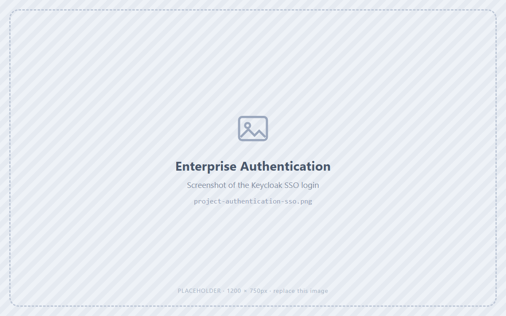

More than a shared login page
The Enterprise Authentication platform uses Keycloak as its main single sign-on layer, alongside directory integration and companion services that connect employee information, application accounts, and identity context. The work extends beyond configuring OIDC: it addresses how a person’s company identity reaches the systems they use.
HRIS supplies employee status and organizational information, supporting account registration when an employee joins and access revocation when the employee becomes inactive. Active Directory provides company directory-account information, accessed through LDAP. Supporting services synchronize employee and directory records, provision application accounts where needed, and provide password-management and identity-lookup workflows for connected systems. This shared foundation supports both employee onboarding and offboarding.
The same employee identity also connects to physical factory access. An in-house application integrates biometric and RFID access systems with the central employee lifecycle, bringing application access and factory entry into one coordinated access-management environment.
Keep one person recognizable across different systems
A directory account, an HRIS employee record, an SSO identity, and an application user serve different purposes. Applications need a reliable way to connect those records without rebuilding directory integration and employee lookups independently.
Successful sign-in is only part of the problem. Applications also need employee context, account state, and the appropriate permission decisions. Password changes and resets require their own account connectors; they should not be confused with profile synchronization or assumed to update every credential store automatically.
Key features
- HRIS-driven onboarding and offboarding
Registering an employee in HRIS feeds the synchronization and account-provisioning process, making the employee identity available to connected applications without repeating registration in each system. When HRIS marks that employee inactive, such as after resignation, the same lifecycle integration drives access revocation across connected applications.
- Connected factory access: biometrics and RFID
An in-house application connects biometric and RFID factory access systems to the central employee identity. Employee registration and active-status changes feed the connected access-management process, giving administrators a coordinated way to manage digital access and physical factory entry.
- Keycloak as the main SSO layer
Applications integrate with the common identity provider through standard OIDC and OAuth2 flows, including authorization-code and PKCE patterns where used by the client integration.
- Active Directory and LDAP integration
Directory integration connects company account information with the wider identity environment. Active Directory is the directory service; LDAP is the protocol used by the connector to read directory records.
- HRIS and directory synchronization
Companion services import HRIS employee information, including the organizational context applications need, refresh directory data, and align relevant employee details such as email. Synchronization is kept distinct from the interactive sign-in flow.
- Account provisioning and identity context
Supporting services identify employees who need application accounts and provide identity information to consuming systems, including employee code, name, email, department, location, and position.
- Password-management connectors
Connected-account services support password change and reset workflows. These account operations complement SSO while retaining the responsibilities of the credential system involved.
- Identity and permission integration
The platform supplies identity and organizational context used by applications to resolve access. Application roles, permissions, and record-level rules remain responsible for the final authorization decision.
From sign-in to a permitted business action
The employee sees a shared company sign-in experience. Behind it, identity establishment and application authorization remain separate steps, so reusing authentication does not require every application to share the same access model.
Authentication and authorization answer different questions. A shared login establishes who the employee is; each application still determines which actions and records are permitted. This is a logical responsibility flow, not a single universal token or session format.
- Start with the employee’s company identity
An application initiates the appropriate Keycloak integration. Standard identity protocols connect the application to the SSO layer.
- Establish the application’s authenticated context
The consuming application handles the sign-in response and creates its own authenticated context according to its integration. Shared login does not imply that all applications use identical session storage.
- Resolve employee information
Connected identity services and employee records supply the organizational details needed by the application. This is distinct from the background work that synchronizes HRIS and directory data.
- Apply the relevant access rules
The application resolves roles, permissions, and record scope before permitting a protected operation. Identity context supports this decision but does not replace backend authorization.
My contribution
I built the enterprise authentication integration around Keycloak and developed the companion services that connect employee records, directory data, and application identity. This includes synchronization, account provisioning, identity lookup, and password-management connectors. I also connected factory biometric and RFID access through an in-house application, extending centralized employee access management to physical entry.
The integration work involves mapping employee and directory identifiers, making organizational context available to applications, and keeping account operations separate from sign-in and permission enforcement. The aim is to provide reusable identity capabilities while allowing applications to retain their business-specific access rules.
I also integrate consuming applications with the standard OIDC/OAuth2 flow and their existing guards and permission models, so the shared identity foundation fits the application rather than duplicating its business logic.
An identity layer with supporting account services
Keycloak supplies the main SSO capability. Directory integration uses LDAP to connect Active Directory information, while TypeScript/Express companion services support employee synchronization, account records, and identity operations. PostgreSQL-backed records support the employee and application-account context.
AD is the directory; LDAP is an access protocol. Synchronization and password operations are distinct integrations. This diagram groups responsibilities without claiming that every connected account shares a password store or updates in real time.
Biometrics and RFID provide physical-access methods; Keycloak provides application SSO. The in-house integration coordinates these systems through the employee identity and lifecycle. Access changes follow each connected system's synchronization and enforcement path.
The important boundaries are functional: the directory holds company directory information, HRIS supplies employee information, Keycloak handles the SSO layer, and companion services bridge the account and identity workflows. The applications consuming that identity still own the meaning of their roles and permissions.
Background synchronization, interactive sign-in, and password operations have different lifecycles. Keeping them explicit makes it easier to reason about an outdated profile, a login problem, or a denied operation without treating them as the same issue.
Outcomes & engineering lessons
A central employee lifecycle makes access administration faster and more consistent. HRIS registration starts the identity and account-provisioning path; HRIS deactivation starts the access-revocation path. Administrators manage the employee’s status centrally instead of repeating account registration and removal across each connected application. The in-house factory-access integration extends that coordinated lifecycle to biometric and RFID access systems.
Account availability and access changes follow the synchronization and enforcement paths of the integrated systems. Provisioning an employee identity does not grant unrestricted access: application roles, permissions, and record-level rules still determine what that employee can do.
The platform gives enterprise applications a common identity foundation while supporting the company’s existing directory and employee-data environment. Reusable connectors reduce the need for each application to build its own employee synchronization, account lookup, and password-management integration.
The central lesson is to treat identity as a set of connected responsibilities. A successful login, an up-to-date employee profile, a provisioned account, and permission to perform a business action are related outcomes, but none should be used as a substitute for the others.